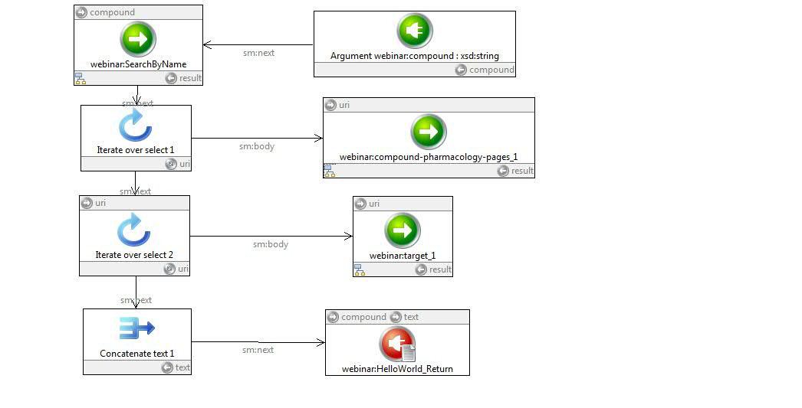
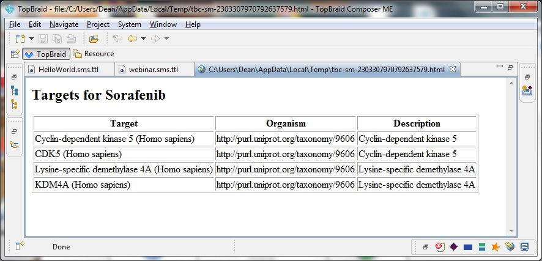

Running your script as a web service
You can carry on in this way, running an OpenPHACTS service and querying the results, pasting the query into a new module, calling new services, etc.
Eventually, you'll want to do something with your results, e.g., display them in a web browser. To do this, you'll need to create a web page from your results, and return them as a result to a HTTP request. You can see an example of the finished product by opening the file webinar.sms.ttl, pulling down the Scripts>Edit/View SPARQLMotion Script, and select the one at the bottom of the list, webinar:Hello_World. You'll see a script that looks something like this:

This script starts off just like yours did, by calling search-freetext, iterating over the results, calling compound-pharmacology-pages on each result, then continues by calling target on each target. Finally (Concatenate text 1), it concatenates all the answers into an HTML table for use by a web browser.
If you run this script (click on the final module, the red one, webinar:HelloWorld_Return), you'll see it in action. It takes a while to do all those OpenPHACTS calls, but when it's done, you'll see the results previewed in a TopBraid Composer pane.

You can also run this as a web service. The .sms.ttl suffix on the file registers its functions as web services with TopBraid. If you have default settings for your TopBraid Composer, you can run your web service from any web browser with the following link (TopBraid must already be running)
http://localhost:8083/tbl/sparqlmotion?id=HelloWorld&compound=Sorafenib
Next: Summary